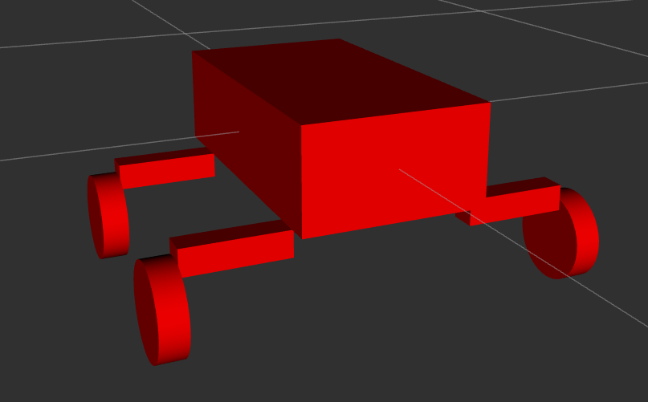
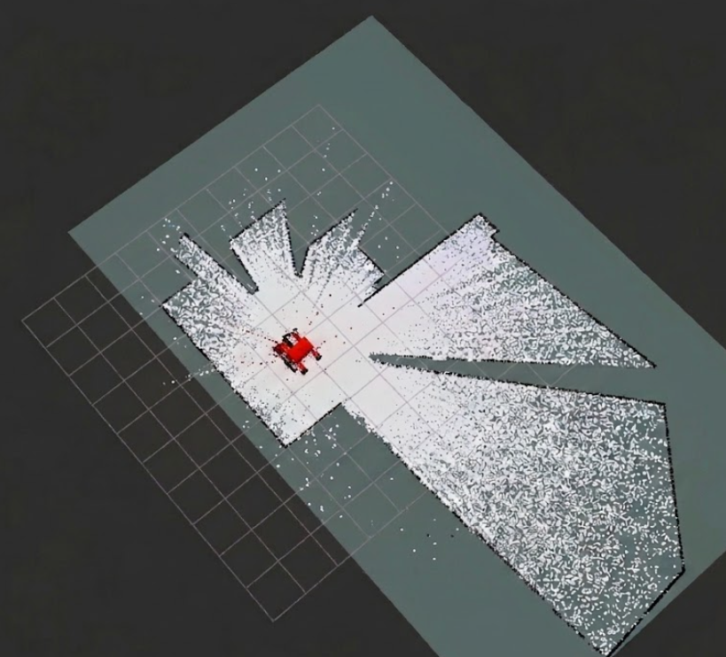
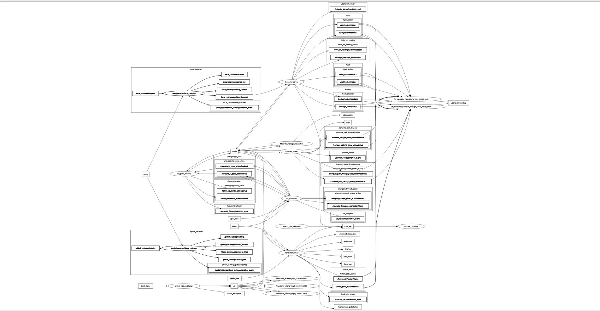

A ROS2 autonomy stack - LiDAR-based odometry, SLAM, and Nav2 path planning - built for a senior robotics project team's lunar rover, under Dr. Shiobhan Oca. My job was to take a rover that could only be driven by hand and make it capable of mapping and navigating on its own with the sole input being LiDAR scans.


This was my first exposure to ROS2. The team's rover existed as a physical platform that could already be tele-operated, but it had no way to perceive its environment or move on its own. My job was to design and build the full autonomy pipeline: take in raw LiDAR data, estimate the rover's motion without wheel encoders, build a map of its surroundings, and plan and execute paths through that map — all running on ROS2 and ultimately deployable to the rover's onboard computer.
Starting from a manually controlled rover, the goal was to build a ROS2 pipeline that could map and navigate using LiDAR as its primary source of perception.
LiDAR scans fed RF2O for odometry and SLAM Toolbox for mapping, while the URDF
provided the transform tree needed by the rest of the stack. Nav2 generated
/cmd_vel commands, which I translated into serial motor commands
with a custom cmd_vel_converter node.
This was the proposed pipeline going in: a small, deliberately simple node graph compared to what actually ends up running once all the nodes are put together (see Section 04).
Before touching the physical rover, I built a URDF describing its chassis, wheels, and sensor mounts so I could develop and sanity check the autonomy stack in Gazebo. This let me iterate on the LiDAR placement, tune the navigation stack's parameters, and catch obvious errors long before they cost time on the actual hardware; especially useful since I was learning ROS2 and the Nav2 stack at the same time as building the pipeline.
Once the individual pieces worked: RF2O producing odometry, SLAM Toolbox producing a map, Nav2 producing plans, the real complexity was in connecting them into a single working system: dozens of nodes talking over topics, actions, and lifecycle transitions The graph below is the full rqt_graph output for the running stack. It's not meant to be legible at this size; it's here to show just how many moving parts a "simple" navigate-to-goal command actually depends on.

In simulation, yes — the rover could localize, build a map of a room, and navigate to a goal pose using the pipeline above. On the physical rover, it never got there.
The hardware itself had integration and power distribution problems that were outside my control as the software lead. The drive motors didn't reliably respond to commands; at times the wheels simply wouldn't move when the autonomy stack sent them a velocity command, which made it impossible to validate closed-loop navigation on the real rover. I could confirm that LiDAR data, odometry, and mapping were all working correctly on the physical platform; I could not get consistent enough motor response to confirm autonomous driving worked end-to-end outside of simulation.
This served as useful it's a useful lesson that autonomy software is only as reliable as the hardware it's commanding.
If I picked this project back up, I’d change two things. First, I’d push for hardware-in-the-loop testing much earlier; even just verifying that a raw /cmd_vel command reliably turned the wheels before investing heavily in SLAM and navigation tuning. Second, I’d structure the ROS2 workspace more deliberately from the start. Since I was learning ROS2 while building the system, the final setup accumulated unnecessary launch steps, manual remappings, and configuration between nodes. With what I know now, I could make the entire stack much cleaner, easier to launch, and easier to debug.